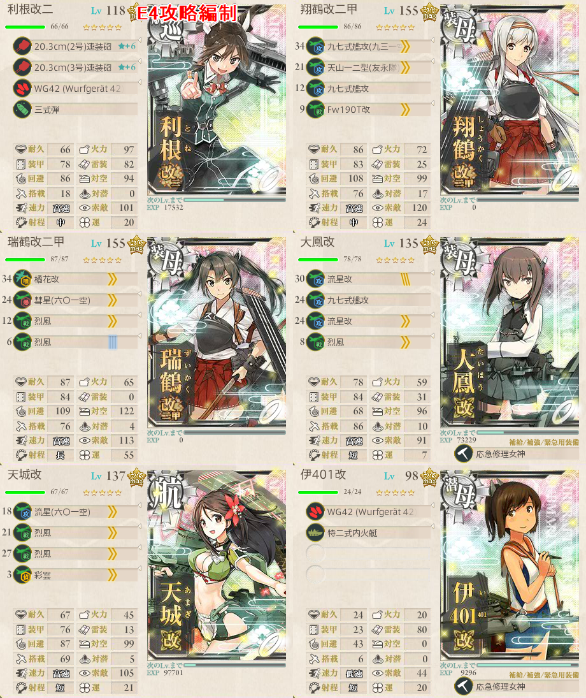
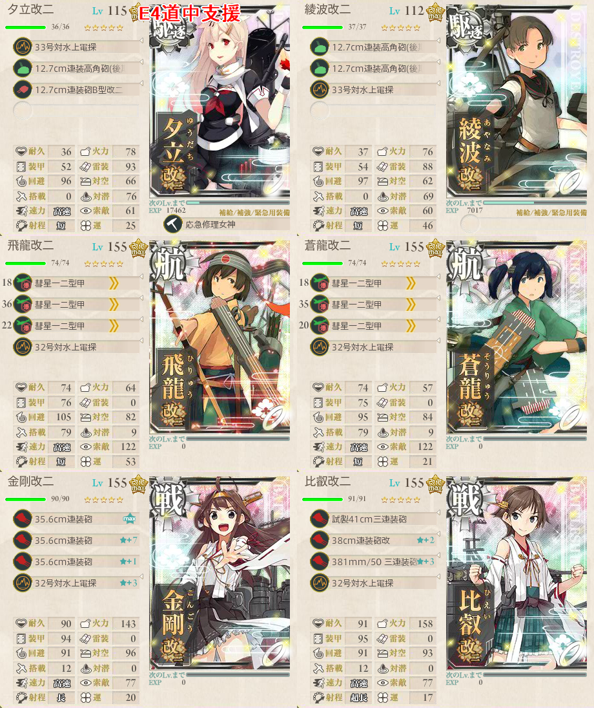
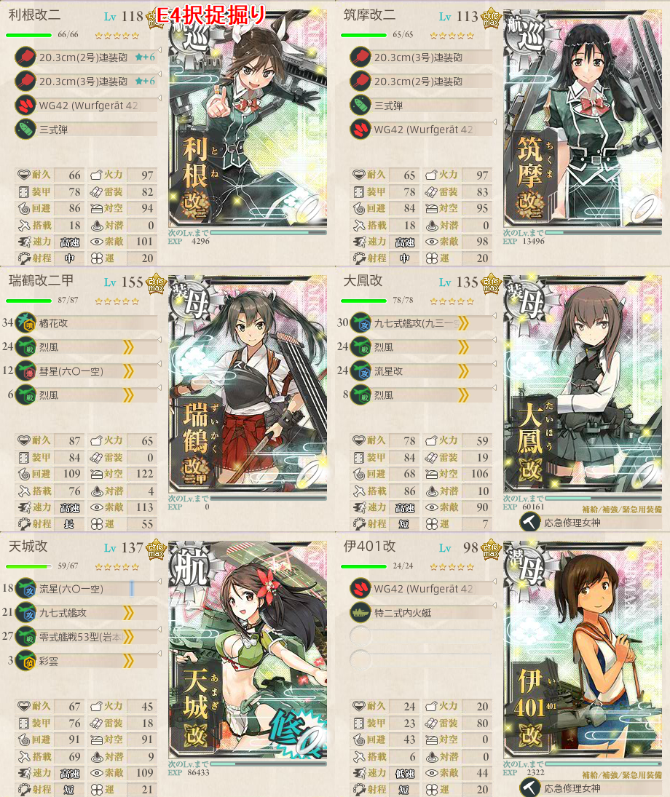
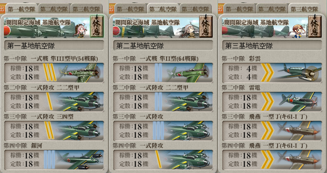

【艦これ】出撃！北東方面 第五艦隊 E4
難易度：甲
攻略
構成

- 九七式艦攻に特攻あり
支援艦隊（道中）

基地航空隊
- 陸攻4をボスに集中x2部隊
- 第三航空隊は局地戦闘機を配備して防空
出撃ログ（甲）
| 回数 | 編成 | ルート | 戦果 |
|---|---|---|---|
| 1 | 利根 翔鶴 瑞鶴 大鳳 天城 伊401 | ABCEHI | S勝利（榛名） |
| 2 | 利根 翔鶴 瑞鶴 大鳳 天城 伊401 | ABCEHI | C 伊401大破 ダメコン進撃 消費なし S勝利（占守） |
| 3 | 利根 翔鶴 瑞鶴 大鳳 天城 伊401 | ABCEHI | S勝利（衣笠） |
| 4 | 利根 翔鶴 瑞鶴 大鳳 天城 伊401 | ABCEHI | S勝利（谷風） |
| 5 | 利根 翔鶴 瑞鶴 大鳳 天城 伊401 | ABCEHI | A勝利（利根） |
| 6 | 利根 翔鶴 瑞鶴 大鳳 天城 伊401 | ABCEHI | S勝利（浜風） ゲージ破壊 |
- 5回目からラストダンス
敵編成
| マス | 敵航空戦力 | 敵潜水艦 | 備考 |
|---|---|---|---|
| A | なし | なし | 水雷戦隊 |
| B | あり | なし | 空襲戦 |
| C | あり | なし | 軽空母1 軽巡2 駆逐3 軽空母が先制対潜する |
| E | あり | なし | 空襲戦 |
| H | なし | なし | 戦艦1～2 駆逐4～5 ここの戦艦は弱い |
| I | あり | なし | ボス 連合艦隊 旗艦：北端上陸姫 補給3 |
択捉掘り
編制

- 支援艦隊は不要
- 道中はいるとCマスの安心感が上がるが、必須でない
- 索敵は2-5式（秋）で48あたりがボーダー？
- 47.9でたまにF反れを確認
基地航空隊

出撃ログ（甲）
| 回数 | 編成 | ルート | 戦果 |
|---|---|---|---|
| 1 | 利根 筑摩 瑞鶴 大鳳 天城 伊401 | ABCEHI | C 伊401大破 ダメコン進撃 消費なし A勝利（筑摩） |
| 2 | 利根 筑摩 瑞鶴 大鳳 天城 伊401 | ABCEHI | C 伊401大破 ダメコン進撃 消費 S勝利（北上） |
| 3 | 利根 筑摩 瑞鶴 大鳳 天城 伊401 | ABCEHI | C 伊401大破 ダメコン進撃 消費 S勝利（阿武隈） |
| 4 | 利根 筑摩 瑞鶴 大鳳 天城 伊8 | ABCEHI | S勝利（日向） |
| 5 | 利根 筑摩 瑞鶴 大鳳 天城 伊8 | ABCEHI | S勝利（榛名） |
| 6 | 利根 筑摩 瑞鶴 大鳳 天城 伊8 | ABCEHI | S勝利（北上） |
| 7 | 利根 筑摩 瑞鶴 大鳳 天城 伊8 | ABCF | C 伊8大破 ダメコン進撃 |
| 8 | 利根 筑摩 瑞鶴 大鳳 天城 伊8 | ABCEHI | S勝利（赤城） |
| 9 | 利根 筑摩 瑞鶴 大鳳 天城 伊8 | ABCEHI | S勝利（川内） |
| 10 | 利根 筑摩 瑞鶴 大鳳 天城 伊8 | ABCEHI | C 伊8大破 ダメコン進撃 消費 S勝利（阿武隈） |
| 11 | 利根 筑摩 瑞鶴 大鳳 天城 伊8 | ABCEHI | C 伊8大破 ダメコン進撃 消費なし S勝利（択捉） |